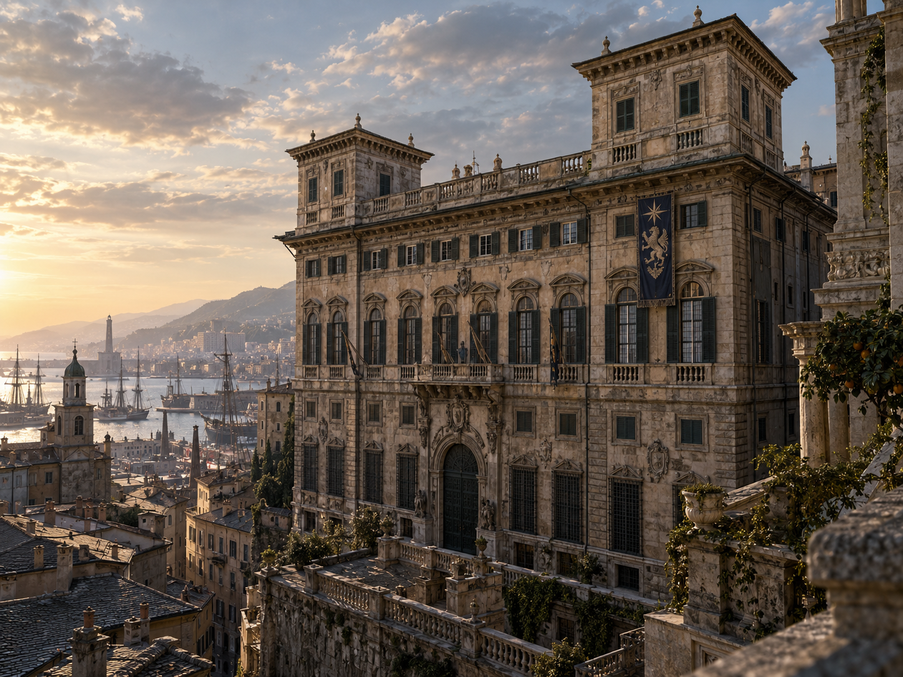

TEST A
Unassigned · awaiting collage identification
0B9B80EF-B5B5-44B1-A700-81EF415C3388.pngView full size ↗House Ravenscroft · Great House Valdieri · Major House Marenesi
Seven new GitHub images, individually displayed as TEST A–G with full-resolution links. The letters follow alphabetical source-filename order, not the numbered collage.
Marenesi is an independent, non-Valdieri-blood Major House directly subordinate to Great House Valdieri—not to the Genova cadet. Its Palazzo delle Torri is not Genova's Palazzo di Levante. Use ordinary or limited-access apparent ages rather than Great-House bloodline longevity when reviewing portraits.

0B9B80EF-B5B5-44B1-A700-81EF415C3388.pngView full size ↗1F3CEEE1-6A47-428A-8652-13A4366EC922.pngView full size ↗
48280A1A-00F2-442E-87FD-CDB094B8E9E2.pngView full size ↗4F5B9A03-B9C6-4F07-B3F2-24B4D5D5063A.pngView full size ↗5FC5CD61-C6F1-43B0-85DF-8E6F5CA5EFA4.pngView full size ↗E62EA7DB-609E-4A23-9D18-5D48927ACA3F.pngView full size ↗
FE87849F-0B40-4C9B-8A97-0CD36BEE2BBA.pngView full size ↗